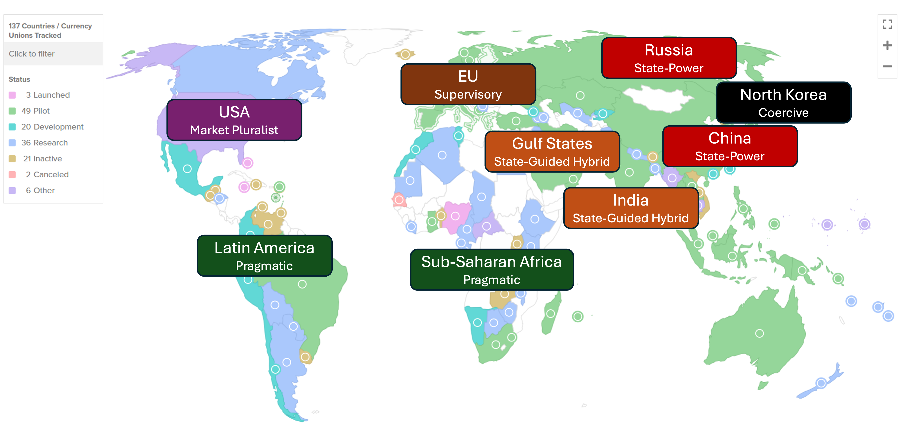

Section IX: Applications and Synthesis · Lesson 03-AS
Blockchain in Geopolitical Competition
Royal Funds Frozen!
- One day, a country wakes up and cannot access its foreign reserves
- Banks refuse transactions
- Global payment systems no longer respond
How is a country’s sovereignty impacted when it can no longer move money?
Financial Rails Are Power
- Economic power is an instrument of national power
- Financial rails determine who can transact, settle, and survive pressure
- Blockchain-based financial systems introduce alternative rails and new control points
Doctrinal Framing
Sanctions, reserves, payment networks, and settlement access are part of the economic instrument of statecraft. When the infrastructure of money changes, the way states project power and absorb pressure changes too.
What We’re Analyzing Today
Now that we have covered CBDCs, stablecoins, and broad sovereignty questions, we can shift to specific country and regional cases.
- How are governments responding when blockchain changes:
- payment chokepoints
- financial visibility
- access to dollar-like digital instruments
How Blockchain Changes State Power
State Concern
- Public blockchains reduce some traditional chokepoints
- Stablecoins and crypto rails can move value across borders faster
- States may lose leverage if activity shifts outside older intermediated systems
State Opportunity
- Public ledgers also make transactions more traceable at scale
- Exchanges, stablecoin issuers, and service providers create new control points
- Digital finance can become a tool of sanctions resilience, surveillance, or monetary competition
Strategic Approaches to Cryptocurrency

States do not follow one universal crypto model; they fall along a policy spectrum.
These choices reflect national interests: innovation, monetary sovereignty, sanctions resilience, surveillance, and access to payments.
The next slides will test this framework against nine country and regional cases.
Source image adapted from the Atlantic Council Cryptocurrency Regulation Tracker.
United States: Overview
Model: Market-driven innovation with strategic dollar protection
- The USG increasingly treats blockchain and dollar-backed stablecoins as tools of competitiveness and dollar reach
- Neither fully pro- or anti-crypto
- Oversight remains fragmented across Congress, Treasury, the Federal Reserve, and market regulators
- Federal policy moved sharply against a retail CBDC in 2025

Flag source: Wikimedia Commons / Wikipedia
United States: Impact Signals
Executive Order 14178 (January 23, 2025)
- Made support for digital assets and open blockchain development an explicit federal policy goal
- Directed agencies to propose a federal digital-asset framework
- Prohibited agencies from establishing or promoting a U.S. CBDC
Stablecoin Policy Shift in 2025
- The GENIUS Act framework creates a federal path for regulated payment stablecoins backed by reserves and subject to supervisory standards
- Treasury framed regulated stablecoins as a way to expand global dollar use and demand for U.S. Treasuries
- Stablecoins are more politically palatable than a retail CBDC because they preserve private issuers, bank intermediation, and distance from direct state retail control
- But that choice still carries risk: private firms and foreign holders can become important nodes in dollar liquidity and reserve demand
EU: Overview
Model: Supervisory integration with strategic autonomy
- The EU treats crypto predominantly as a supervision and sovereignty question
- MiCA (Markets in Crypto-Assets) regulation gives the EU one crypto rulebook across member states before broader market expansion
- The digital euro remains part of a long-term payments-autonomy strategy
- The posture is coordinated, bloc-wide, and more state-guided than the US

Flag source: Wikimedia Commons / Wikipedia
EU: Impact Signals
MiCA as a bloc-wide rulebook
- MiCA gives the EU one supervisory framework for crypto issuers, exchanges, and service providers across the single market
- It is meant to reduce national fragmentation and bring stablecoins and crypto firms under consumer-protection and prudential rules
- It has been welcomed as regulatory clarity by some firms, but it also raises compliance costs and may concentrate activity in the best-prepared jurisdictions
The digital euro project
- The digital euro project aims to preserve public money in digital payments and reduce dependence on non-European payment platforms
- The European Commission presented the legal package on June 28, 2023, keeping open the option of a retail digital euro
- The project still faces political and practical questions about privacy, adoption, and whether Europeans see enough benefit to justify a new payment layer
China: Overview
Model: State-capacity first, with prohibition of private crypto speculation
- China restricts private crypto speculation while advancing state-directed digital money
- e-CNY is built inside a state-observable payment architecture
- Blockchain is accepted where it strengthens official payments, trade, or administrative capacity
- The goal is state capacity and control
Flag source: Flagcdn
China: Impact Signals
e-CNY is built for traceability under state rules
- People’s Bank of China (PBOC) materials describe e-CNY as using managed anonymity, or “anonymity for small value and traceable for high value”
- In practice, that means e-CNY is not designed to work like cash-level anonymity at scale
- Larger or suspicious flows remain visible to authorities for compliance and enforcement
Critics worry this fits a broader control architecture
- Chinese officials present e-CNY as privacy-protective, but only within a state-managed data system
- That raises surveillance concerns because a state-linked payment system can make transaction activity easier to monitor, map, and analyze
- It also raises censorship concerns because a payment system under centralized control can be used to restrict, freeze, or deny transactions in line with state policy
Russia: Overview
Model: State-capacity under sanctions pressure
- Sanctions pressure pushes Russia to seek payment channels less dependent on Western banks, messaging networks, and dollar-linked intermediaries
- The digital ruble and other state-led digital-finance experiments aim to widen foreign-trade settlement options
- Many of these experiments still depend on exchanges, stablecoins, and intermediaries that can be frozen, pressured, or cut off
Flag source: Wikimedia Commons / Wikipedia
Russia: Impact Signals
State rollout of the digital ruble
- Russia has developed the digital ruble over several years as a state-run alternative within its domestic payment system, and plans to begin a large-scale introduction on September 1, 2026, moving past the pilot stage
- The opportunity is stronger domestic payment control, but the model also raises concerns about state visibility, limited user appeal, and whether it can meaningfully reduce external financial pressure
Foreign-trade digital-asset experiments under sanctions
- In February 2024, the State Duma, Russia’s lower house of parliament, approved use of digital currency for international payments as part of a sanctions-era search for alternative trade rails
- But the March 6-7, 2025 Garantex actions showed how quickly those alternatives can run back into chokepoints when exchanges, stablecoin issuers, and cross-border enforcement coordination are still involved
North Korea: Overview
Model: Coercive revenue generation under sanctions
- North Korea has evolved from isolated cyber theft into a more sustained crypto-revenue strategy
- State-linked operators steal from exchanges, bridges, and service providers, then use laundering networks to generate revenue for sanctioned state activity
- The strategy depends on covert cyber capability, not open domestic crypto adoption
Flag source: Wikimedia Commons / Wikipedia
North Korea: Impact Signals
State-linked theft at industrial scale
- Chainalysis reported that North Korea-linked hackers stole about $1.34 billion across 47 incidents in 2024, up sharply from roughly $660.5 million across 20 incidents in 2023
- This scale suggests a sustained state revenue strategy rather than isolated criminal activity
- Stolen crypto can support procurement, sanctions evasion, and other state-linked activities once it is laundered into usable funds
Laundering infrastructure keeps getting sanctioned
- The U.S. Treasury sanctioned Blender.io in May 2022 and later sanctioned Sinbad.io in November 2023 for laundering DPRK-linked stolen virtual currency
- In both cases, U.S. officials tied the services to the Lazarus Group, the DPRK-linked hacking organization associated with major exchange and bridge thefts
- These sanctions show that DPRK laundering networks are sophisticated, but they still create traces that states can identify, designate, and disrupt
India: Overview
Model: Regulated integration with monetary caution
- India moved from early near-ban debates to controlled tolerance
- The digital rupee is the state-approved path for payments innovation
- Tax, compliance, and Reserve Bank of India (RBI) warnings reflect concern about volatility, capital flight, and monetary control
- Innovation is allowed, but only on terms the state can supervise closely
Flag source: Wikimedia Commons / Wikipedia
India: Impact Signals
The digital rupee remains the official digital-money path
- The RBI’s CBDC concept note and later FAQs show a central-bank-led rollout rather than an open crypto-payment strategy
- The project is framed around safer payments, settlement efficiency, and state oversight, keeping digital-money experimentation inside the existing monetary architecture
- Adoption expanded through pilots across banks, merchants, and selected cities, but transaction volumes also showed that everyday use is still limited
Private crypto is tolerated, but burdened and discouraged
- India’s 2022-23 Union Budget imposed a 30% tax on income from virtual digital assets and transaction-reporting through tax deducted at source (TDS)
- RBI leadership continued to warn in 2024 that cryptocurrencies pose macroeconomic and financial-stability concerns
- The result is a restrictive environment: crypto is not fully banned, but it is clearly not being welcomed as a mainstream monetary alternative
Gulf States: Overview
Model: Strategic diversification through regulated hubs and payment sovereignty
- The UAE and Saudi Arabia use licensed crypto markets and payment experiments to build regional influence, with the UAE also aiming for global hub status
- Hub-building: Attracting firms, capital, and financial tech activity under state-set rules
- Cross-border payment projects reflect a push for faster settlement and more regional autonomy
Flags source: Wikimedia Commons / Wikipedia
Gulf States: Impact Signals
The UAE is building a licensed crypto hub
- Dubai’s Virtual Assets Regulatory Authority (VARA) was created to license and supervise crypto activity under a dedicated rulebook
- The objective is to attract firms and capital without surrendering compliance, AML, and market-integrity oversight, though tighter rules also raise costs for smaller or less mature firms
- The hub-building strategy is progressing: Dubai has kept updating its rulebooks, attracting major firms, and positioning itself as a regulated gateway for regional and global crypto business
Gulf states are testing new cross-border payment rails
- The UAE and Saudi Arabia launched Project Aber in 2020 to test whether a shared wholesale digital currency could make cross-border interbank settlement faster and more direct
- The UAE later became a core participant in Project mBridge, which reached MVP stage on June 5, 2024 as a working cross-border settlement platform ready for broader testing, though not yet a full production system
Latin America: Overview
Model: Pragmatic adoption under economic pressure
- Latin America uses crypto to solve concrete problems: inflation, remittances, and cross-border payments
- In Argentina, chronic inflation and peso weakness push households toward stablecoins as savings protection
- In Brazil, deeper financial markets support a more institutional and tokenized-finance pathway

Flags source: Wikimedia Commons / Wikipedia
Latin America: Impact Signals
Argentina: stablecoins as economic shelter
- Argentina led the region in crypto value received at about $91.1 billion between July 2023 and June 2024
- Stablecoin use surged as inflation, peso devaluation, and demand for dollar substitutes intensified
- At the same time, Argentina’s CNV moved to register and supervise virtual-asset service providers rather than simply ignore them, showing formalization alongside crisis-driven demand
Brazil: institutional growth and Drex
- Brazil showed renewed institutional crypto activity and deeper participation by major financial firms
- The Central Bank of Brazil’s Drex pilot shows official interest in tokenized financial infrastructure and programmable settlement
- Brazil is testing whether crypto-linked finance can move from market activity into state-recognized financial infrastructure
Sub-Saharan Africa: Overview
Model: Pragmatic adoption plus selective formalization
- Sub-Saharan Africa is one of the clearest utility-driven crypto regions in the world
- Nigeria anchors high-utility stablecoin and retail adoption under foreign-exchange and inflation pressure
- South Africa anchors licensing, institutional participation, and regulatory formalization
- The regional posture combines necessity-driven use with formal integration

Flags source: Wikimedia Commons / Wikipedia
Sub-Saharan Africa: Impact Signals
Nigeria: high-utility stablecoin and retail adoption
- Nigeria ranked #2 globally on the 2024 crypto adoption index and received about $59 billion in value between July 2023 and June 2024
- Stablecoins are central because users and businesses need dollar-like instruments for savings and cross-border transfers
- Nigeria’s SEC launched ARIP in June 2024, showing a shift from uncertainty toward formal onboarding of virtual asset service providers (VASPs) even as demand continues to outpace regulatory stability
South Africa: licensing and institutional integration
- The FSCA reported in December 2024 that it had received 420 crypto asset service provider (CASP) licence applications and approved 248, showing crypto activity moving into licensed financial channels rather than remaining mostly informal or retail-only
- Project Khokha and broader bank participation show closer links between crypto markets and traditional finance, though tighter licensing and compliance standards may favor larger firms over smaller entrants
Competing Financial Infrastructures
The geopolitical question is no longer whether alternatives exist, but which rails states choose to trust, shape, or resist.
Closing the Geopolitical Discussion
- What now seems settled:
- blockchain and digital money are part of sanctions, payments, surveillance, and monetary competition
- states now have recognizable postures, not just isolated experiments
- What remains unresolved:
- which rails will scale and gain trust
- whether digital finance reinforces existing monetary hierarchies or redistributes them
- whether new systems decentralize power or simply create new forms of control